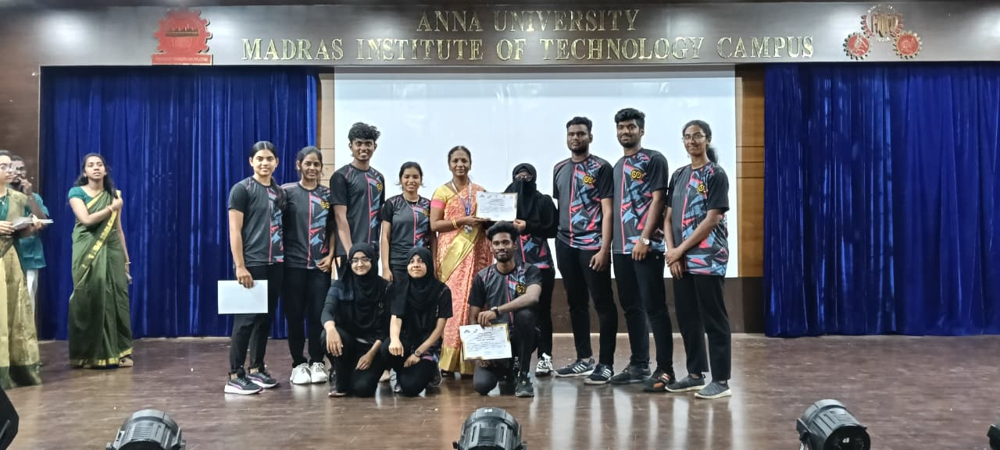
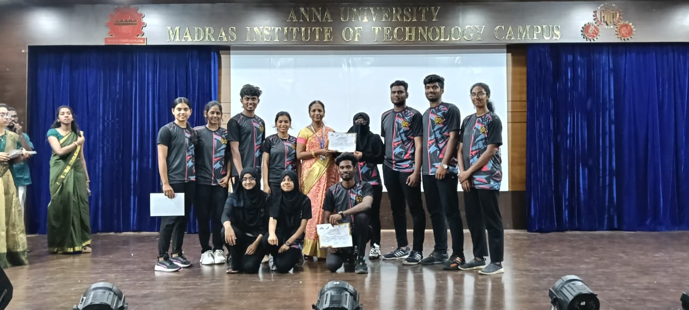

நிகழ்வுகள்
"தமிழின் செழுமையையும் பண்பாட்டின் பெருமையையும் போற்றுவோம்"
சிவரஞ்சனி
சிவரஞ்சனி என்பது எம் ஐ டி இன் ஒற்றை பருவத்தில் நடைபெறும் மிகப் பெரிய விழா. இவ்விழாவில் எம்.ஐ.டி தமிழ் மன்றம் நடத்தும் சிலம்பம், நடனம், பறை போன்ற மேடை நிகழ்ச்சிகளும், விழாத்திரள் (Flashmob) நிகழ்ச்சிகளும் விழாவின் உற்சாகத்தை பல மடங்கு உயர்த்துகின்றன.
மேலும், கல்லூரி மாணவர்களுக்கான பல்வேறு நிகழ்ச்சிகள் மற்றும் போட்டிகள் நடத்தப்பட்டு, மாணவர்கள் தங்கள் திறமைகளை வெளிப்படுத்தும் வாய்ப்பைப் பெறுகின்றனர்.
ஓவியக் கண்காட்சி
எம்.ஐ.டி தமிழ்மன்றம், பிற மாணவக் குழுக்களுடன் இணைந்து ஓவியக் கண்காட்சியை நடத்துகிறது.
மாணவர்களின் கற்பனைத் திறனும் படைப்பாற்றலும் வெளிப்படும் ஓவியங்கள், கைவினைப் பொருட்கள் மற்றும் பல்வேறு கலைப்பொருட்கள் இங்கு காட்சிப்படுத்தப்படுகின்றன. இக்கண்காட்சி, மாணவர்களின் கலைச்சிந்தனையை ஊக்குவித்து புதிய சிந்தனைகளுக்கு வழி வகுக்கிறது. பார்வையாளர்கள் கலைப்பணிகளை ரசித்து அனுபவிக்கச் செய்யும் சிறப்பான மேடையாக இது விளங்குகிறது.

 

தமிழ்ப் பண்பாட்டுப் பெருவிழா
தமிழ்ப் பண்பாட்டுப் பெருவிழா என்பது, தமிழ்மொழியின் செழுமையையும், தமிழரின் உயர்ந்த பண்பாட்டையும் உலகறியச் செய்யும் ஒரு கலாச்சாரக் கொண்டாட்டமாகும். இவ்விழா, புதிய தலைமுறையினருக்கு தமிழ்மொழியின் பெருமையும் பாரம்பரியமும் விளங்கச் செய்யும் நோக்கத்துடன் ஆண்டுதோறும் நடத்தப்படுகிறது. பல்வேறு கல்லூரிகளிலிருந்து மாணவர்கள் இந்நிகழ்ச்சியில் பங்கு பெறுவர்.
"சான்றோரைப் போற்றுவதும், கற்றோரைக் கெளரவிப்பதும், தமிழர்களாகிய எமது மரபு, எமது சீரிய பண்பாடு!"
என்ற கருத்தின் வழியில் இவ்விழாவில், சிறந்த படைப்பாளர்கள், சிந்தனையாளர்கள், பேச்சாளர்கள் மற்றும் கலைகளில் திறமையான மாணவர்கள் பல்வேறு போட்டிகள் மூலம் கண்டறியப்படுகின்றனர்.
அவர்களின் திறமைகளைப் பாராட்டி, அங்கீகரித்து, அனைவருக்கும் முன்மாதிரியாகக் காட்டுவதே இந்த விழாவின் நோக்கமாகும். மேலும், இந்நிகழ்வு தமிழரின் பண்பாட்டை, கலைகளை, இலக்கியத்தை, மற்றும் பாரம்பரியத்தை பரப்பி, சமூகத்தில் ஒற்றுமை, சிந்தனை நயம், மற்றும் கலை உணர்வு வளர்க்கும் ஒரு விழாவாக திகழ்கிறது.
நடத்தப்படும் போட்டிகள்
- கவிதைப் போட்டி
- கட்டுரைப் போட்டி
- விவாத மேடை
- பேச்சுப் போட்டி
- சிலம்பப் போட்டி
- நடனப் போட்டி
- கோலப் போட்டி
- ஓவியப் போட்டி
மிட்டாஃபெஸ்ட்
இரட்டை பருவத்தில் நடைபெறும் எம்.ஐ.டி-யின் சிறப்பு விழா மிட்டா (MITA). இதில் ஒரு நாள் தமிழ் மன்றத்திற்காக (Traditional Day) ஒதுக்கப்படுகிறது, அந்நாளில் அனைவரும் பாரம்பரிய உடையுடன் பங்கேற்கின்றனர்.
தமிழ் மன்றம் பல்வேறு நிகழ்ச்சிகள், போட்டிகள், விவாதங்கள் போன்றவற்றை நடத்துகிறது. மேலும், மேடையிலும் விழாத்திரள் (Flashmob) நிகழ்ச்சிகளிலும் சிலம்பம், நடனம், பறை போன்ற கலாச்சார கலைகள் விழாவின் உற்சாகத்தை அதிகரிக்கின்றன.
சுவை சங்கமம்
எம்.ஐ.டி தமிழ்மன்றம் நடத்தும் 'சுவை சங்கமம்' உணவுத் திருவிழா, தமிழரின் பாரம்பரிய உணவுகளை மாணவர்களிடம் பரப்பும் நோக்கத்துடன் நடைபெறுகிறது. மாணவர்கள் பல்வேறு மண்டலங்களின் பாரம்பரிய உணவுகளைத் தயாரித்து, இலையில் அன்புடன் பரிமாறுகின்றனர்.
மேலும், பாரம்பரிய உணவுக் கடைகள் மற்றும் சிறப்பு உணவுப் பந்தல்கள், குறு சிறு உணவுசார் தொழில் செய்வோரால் இங்கு அமைக்கப்பட்டு, பார்வையாளர்களுக்கு சுவைமிகு அனுபவத்தை அளிக்கின்றன. இந்த விழா, மாணவர்களுக்கு கலாச்சார அனுபவம், ஒற்றுமை உணர்வு, மற்றும் தமிழரின் உணவுப் பாரம்பரியம் குறித்த விழிப்புணர்வு ஆகியவற்றை வளர்க்கிறது.
பட்டிமன்றம்
எம். ஐ.டி. தமிழ் மன்றம் சிறப்பு நாட்களில் பிற மாணவக் குழுக்களுடன் இணைந்து பட்டிமன்றங்களை நடத்தி வருகிறது.
இந்த மேடை மாணவர்களின் வாதத் திறன், தர்க்கத் திறன், உரைத்திறன் ஆகியவற்றை வளர்க்கும் வகையில் அமைந்துள்ளது. நம் சமுதாயத்துடன் தொடர்புடைய தலைப்புகள் பேசப்படும் இந்நிகழ்ச்சிகள், பல்வேறு கருத்துக்களை ஆரோக்கியமான முறையில் பரிமாறிக் கொள்ளும் வாய்ப்பையும் வழங்குகின்றன.
பெரும் பார்வையாளர்கள் முன்னிலையில் நடைபெறும் இப்பட்டிமன்றங்கள், மாணவர்கள் தங்கள் திறமைகளை வெளிப்படுத்தவும், தமிழின் பெருமையையும் அழகையும் உணரவும் ஒரு சிறந்த வாய்ப்பாக அமைகின்றன.